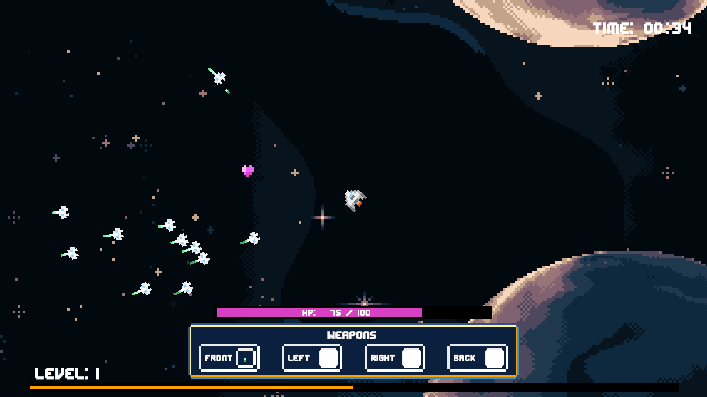

Spacewars
Un proyecto desarrollado en 2D donde el jugador controla una nave y debe destruir oleadas de enemigos; a medida que avanza, gana experiencia para adquirir nuevas armas y mejorar las estadísticas de su nave, inspirándome para este juego en la mecánica de progresión de Vampire Survivors.
